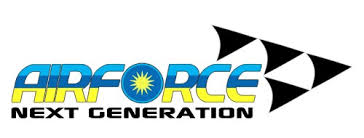

LOGO AFNG

Sempena HUT TUDM yang ke-52 pada 01 Jun 10, KDYMM Sultan Pahang selaku Kolonel Yang Dipertua TUDM telah melancarkan logo strategik Airforce Next Generation (AF-NG).
Matlamat AF-NG adalah untuk membentuk TUDM sebagai satu tentera udara berkeupayaan full spectrum yang boleh melaksanakan tugas dan misi di dalam semua keadaan aman atau perang dengan berkesan.
Inisiatif bagi transformasi AF-NG tersebut telah diketengahkan oleh Panglima Tentera Udara bagi melonjakkan TUDM ke satu tahap tinggi sebagai tentera udara bertaraf dunia.
TUDM perlu berubah untuk menjadi ketumbukan yang lebih berwibawa dan berkaliber dari apa yang ada sekarang.
Muka Surat 2
Muka Surat 3